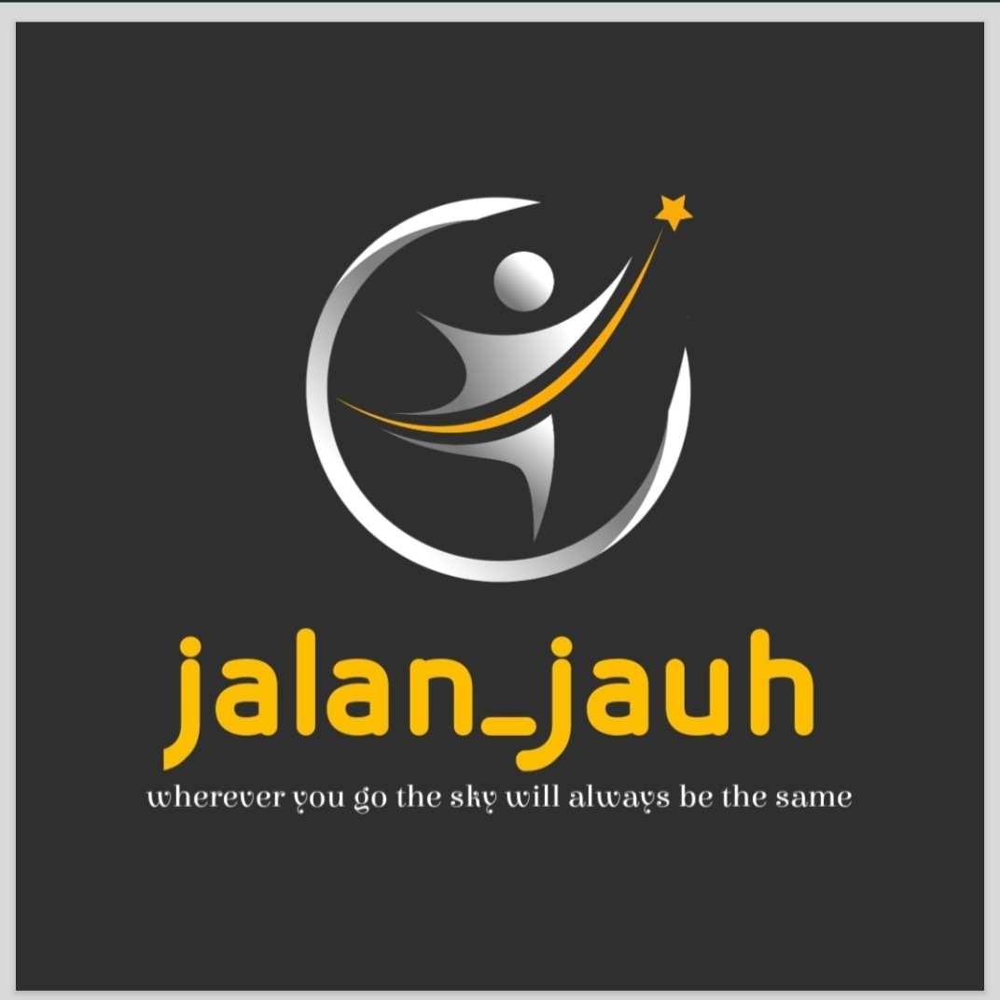

INTERNAL AUDIT MANUAL
Created by; Adi Gunawan Tahir
1. PIAGAM
2. PERENCANAAN (AAP - ANNUAL AUDIT PLAN)
3. PELAKSANAAN
4. QAIP (QUALITY ASSURANCE AND IMPROVEMENT PROGRAM)
5. EQA (EXTERNAL QUALITY ASSESSMENT)
6. KOMPETENSI
🇺🇸
🇮🇩
1. PIAGAM DAN KEWENANGAN AUDIT INTERNAL
Prinsip Inti Kewenangan:
Systematically evaluates and promotes improvements in governance, risk management, and control processes.
Ensures unrestricted access to all records, assets, and personnel.
Guarantees freedom from undue interference in determining the scope and execution of the work.
2. PERENCANAAN AUDIT STRATEGIS & TAHUNAN (AAP - ANNUAL AUDIT PLAN)
Planning Process Criteria:
Development of the Audit Universe (a comprehensive inventory of all auditable entities).
Systematic Risk Assessment to prioritize audit areas based on financial impact and complexity.
Creation of the Annual Audit Plan (AAP), outlining engagements and resource allocation for approval.
3. PELAKSANAAN AUDIT (PENGUJIAN & BUKTI)
Execution Procedures:
Information Gathering via document reviews, process observations, and key personnel interviews.
Melakukan pengujian untuk mengevaluasi desain dan efektivitas operasional dari pengendalian internal.
All findings must be supported by sufficient, reliable, relevant, and useful audit evidence.
4. QAIP (QUALITY ASSURANCE AND IMPROVEMENT PROGRAM)
QAIP Components:
Internal Quality Review: Involves ongoing monitoring (supervision) and periodic internal assessments.
Formal Evaluation: Assesses the function's conformance with IIA Standards and the Code of Ethics.
5. EQA (EXTERNAL QUALITY ASSESSMENT)
EQA Key Requirements:
Frequency: Must be performed at least once every five years.
Reporting: Results are reported directly to the Audit Committee.
Purpose: Serves as a key input for continuous improvement and global alignment.
6. KOMPETENSI DAN PENGEMBANGAN BERKELANJUTAN
Professional Development Paths:
Continuous Professional Development (CPD) and ongoing training.
Professional certifications, such as the Certified Internal Auditor (CIA).
Proactive self-study and independent learning.